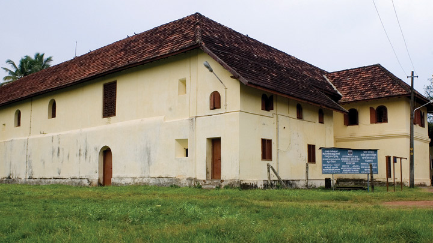

Ernakulam refers to the eastern, mainland portion of the twin cities of Ernakulam-Kochi in central Kerala, India. Located on the coast of the Arabian Sea, Ernakulam is a booming business metropolis. It is often referred to as the commercial capital of Kerala. Ernakulam has been a part of human settlements since the Stone Age. Rock-cut caves and dolmens are still a part of this city. Ernakulam was ruled by the Chera Dynasty and later, by the Kingdom of Cochin (Perumpadapu Swaroopam).
Surely there are innumerable tourist places to visit in Kochi, also formerly known as Cochin, which is of interest related to history, nature, luxury or adventure.The main tourist attractions in Ernakulam are the Hill Palace Museum, Madhavan Nayar Foundation, Kaladi, Kodanad, Chendamangalam, Malayatoor, Bhoothathankettu and Thattekkad Bird Sanctuary. Being home to numerous temples and churches.Ernakulam is a favorite among domestic tourists visiting Kerala. Having names of Painavu, arch dam, poonchira, Idukki shows a variety in its attractions.The 3 rivers Thodupuzhayar, Periyar, and Thalaya along with their tributaries keep Idukki evergreen.
The financial capital of Kerala has a cosmopolitan culture added to that is nature’s bounty in different forms, thus making it an ideal place to holiday. Kochi also offers the best Seafood cuisine cooked the traditional way of doing justice to the fresh catches of the day. An evening spent watching the traditional art forms of Kerala unleashing the rich culture of this state.
This is the most visited and highly revered Hindu temple down south. The temple is believed to be 1500 year old where the goddess Chottanikkara Bhagavathy Amman and the Keezhu Kaavu Bhadrakali Amman are worshipped as healing goddesses. A continuous practice of worshipping the deities in this temple is believed to cure life-threatening diseases.
The temple premises houses a Pala tree which is pierced with thousands of nails, the reason being patrons who are cured of mental maladies drive a nail across the tree. Men are required to open their shirts before they enter the premises, while women are requested to be dressed in Indian attire to offer reverence.
Wonderla has evolved into one of the premier amusement parks in the country. Located in Kochi, it is also regularly rated among the most visited spots in Kerala. People from across the country throng here to enjoy a multitude of rides and attractions. It is the first ISO 14001 (for environmental protection) and OHSAS 18001 (for safety) certified amusement park in India. Since 2000, it has entertained vacationers and locals alike with more than 50 rides on offer.
The land and water rides are famous for the thrilling experiences they offer. The family friendly vibe prevalent in the park is hard to miss. Impeccably maintained, it boasts of a wide array of food options as well. Everyone who ever goes to Wonderla is assured a memorable experience that keeps getting better with each visit.
This Portuguese palace, also known as the Dutch Palace is one of the prime places to visit in Kochi due to its historic relevance. This quadrangular palace built in typical Kerala Nalukettu style has a courtyard in the centre where is seated the Pazhayannur Bhagavati' the goddess of Kochi royal family.
The flooring of the palace is a sight to behold, as because it looks like polished black marble, but has been made the traditional Kerala way using burnt coconut shells, lime, charcoal, egg white etc giving a lasting finish. The reputation of the Palace is in the various murals painted in warm and rich colours the tempura style.

The largest archaeological museum which features in the list of Kochi tourist places used to be the residence of the Maharaja of Cochin built in traditional Kerala style with lavish façade. The complex houses 49 buildings spread across 54 acres of land which now comprises of an archaeological museum, deer park, Medicinal plant garden, pre-historic park and a children’s park.
The museum showcases ornaments, weapons, manuscripts and other belongings of the royal family with a few exhibits from the Paliam Devaswom.

This charming beach is neatly nestled in the suburbs of Cherai, which is one of the most visited beaches due to its serenity and clean environ. The low tides and slow waves make it a highly recommended beach for swimming and other forms of water sports. It has an alluring walkway along the beach dotted with greens and sufficient places for seating.
Elderly visitors are often seen indulging in yoga, meditation or light strolls during the early morning or evening hours to enjoy the splendour of mother nature. The beach has several luxury villas, resorts and beach hotels lined along the Arabian sea where river Periyar confluence to make for a picture postcard frame.